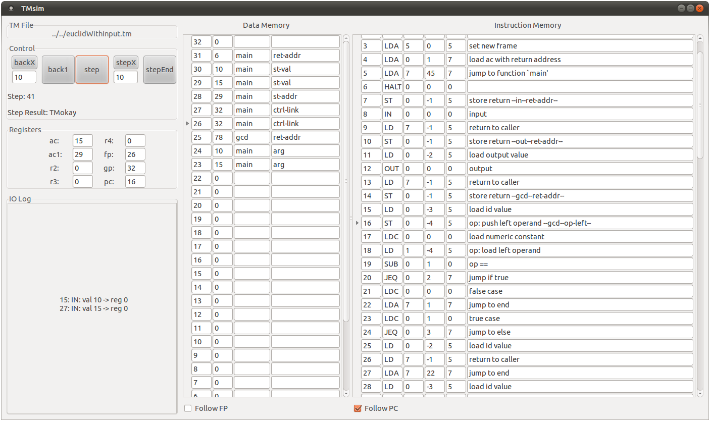
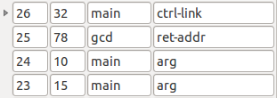

Tiny Machine Visual Simulator
This tool provides a visual insight to the workings of the Tiny Machine[1]. The primary function is to help debug the code generation phase of a compiler that targets the Tiny Machine as its back-end. Although the simulator can execute generic programs written for the Tiny Machine, it is designed to be most useful when used with the stack based run-time environment described in [1].

The Tiny Machine (TM) executes in a sequence of steps, each step corresponds to the execution of a single machine instruction. This simulator allows the user to step forwards and backwards through program execution using the control area of the GUI. Associated with each step is a machine state which is displayed to the user via the register, data memory and instruction memory areas. In addition, a log of all IO activity is recorded.
Acknowledgment
The Tiny Machine is described by Kenneth C. Louden in Compiler Construction - Principles and Practice [1]. A command line based simulator for the TM is available from the book's website.
Download, Compile & Run
Download the release here: tmvs-0.11.zip
The simulator is written in Haskell and distributed as source. It should be compiled using ghc by executing the following command in the root directory of the distribution:
ghc --make tmvs.hs
In addition to ghc, the following items are required. If you use ubuntu these can be found through the software center - the package name follows each item.
- GKT+ toolkit (libgtk2.0-0)
- Gtk2Hs bindings (libghc6-gtk-dev)
- Text.Regex module for ghc (libghc6-regex-compat-dev)
To start the simulator with a program test.tm with a data memory of size X, execute the following command:
tmvs test.tm X
Format of a TM file
The simulator expects files to be in the format described in [1] and is the same as that used in the command line TM simulator. An exception to this is that the address-labeled machine instructions may appear in any order in the TM files Louden describes (to facilitate backpatching in code generation). However, this simulator expects files with machine instructions that appear in order of memory address. You can check the instruction memory area of the simulator to ensure your file has been read correctly.Detailed Description
Initial state
At startup the maximum address of data memory is placed into data memory location 0. This value can then be read by your program to find the size of data memory available to the machine.
Control
The control area allows the user to step forward and back through the execution of the program. A single step of the simulator corresponds to executing the machine instruction pointed to by the current value of the program counter (pc) register. This is set to 0 initially and thus execution proceeds by processing the instruction in instruction memory location 0.
The buttons step and back1 perform single steps forward or back. The button backX rewinds X steps of the program's execution where X is the user defined value in the box below (default 10). In addition to restoring the state of an earlier step, all input and output performed during the last X steps is removed. If X is greater than the current step number, then step is set to 0 effectively resetting the machine. The stepX button performs X steps forwards. However, if an input is requested during the execution of the X steps then execution stops so the user can enter a value and does not automatically resume. Finally, the stepEnd button will execute a program to its conclusion (i.e. it stops executing at a HALT instruction). The same behavior as stepX applies if user input is requested.
Below the control buttons is an indicator displaying the current step number and the step result. The step result is used by the TM to relate information back to the environment. The default result of a TM step is TMokay indicating that the instruction executed successfully. Other possible step results are as follows:
- TMhalt: The instruction just executed was a HALT instruction.
- TMinputReq R: The TM requests user input which will be placed into register R. A dialog box pops up requesting the input from the user.
- TMoutput X: The TM outputs value X.
- TMiMemError A: The TM has tried to access address A of instruction memory which is outside the range of valid addresses.
- TMdMemError A: The TM has tried to access address A of data memory which is outside the range of valid addresses.
- TMzeroDivide: The TM has tried to divide by zero.
In case of a TMhalt or error state (TMiMemError, TMdMemError or TMzeroDivide) the machine halts and further execution is not possible. The step forward buttons are unavailable but the user can step backwards to investigate the cause of the problem. The machine state does not change when an error is encountered (e.g. the program counter does not advance).
When an IO operation is the result of a step then this is recorded in the IO log.
Registers
The value stored in each register is displayed here. Abbreviations are used for registers that are assigned a specific purpose:
- ac: Accumulator
- ac1: Secondary accumulator
- fp: Frame pointer
- gp: Global pointer
- pc: Program counter
IO Log
A record of each IO operation is stored here. Input operations are stored using the following syntax:
- S: IN: val X -> reg R
Output operations are as follows:
- S: OUT: X
The user can copy from this area to take a copy of the log. This can help recreate states in programs which were the result of user entered data.
Data Memory
This area displays the data memory (dmem) of the TM. It is presented in reverse order as this area contains the stack which grows downwards in memory. If there are global variables in the program then these appear above the stack at the top of memory. Therefore, the global pointer always points to the top of dmem.
The first column indicates the memory address of this record and the second column shows the value stored at this address. The roles of the third and fourth columns are discussed later.
The arrow on the left of data memory indicates the record pointed to by the frame pointer (fp). By checking the "Follow FP" box in this part of the GUI, the scrolled window will center on the memory record pointed to by the current value of the frame pointer.
A mechanism to automatically display information beside a record of data memory is available. The intended use of this mechanism is to allow a user to attribute a stack frame with details of what each memory location means. This could be used to indicate, for example, which record stores the return address, the control link or a local variable. Here is an example of this mechanism in use:

As can be seen in the above image, the third column is used to display the name of the function that performed the ST operation and the fourth column is used to display the specific role of that memory record. In this case, the caller main is responsible for setting the control link and computing the augments, while the callee gcd only stores the return address.
The simulator is informed of where and when to display this information by processing the comment of a ST machine instruction (ST machine instructions are the only instructions that affect data memory). The pattern of information to be displayed is as follows:
- 14: ST 0, -1(5) store return --THIRDCOL--FOURTHCOL--
- 14: ST 0, -1(5) store return --gcd--ret-addr--
If a ST operation is performed for a memory location that already contains this extra information, then it is unlikely that this subsequent value will have the same meaning as the previous value. For this reason, if a ST operation has no information encoded in its comment, then the current information is cleared.
Instruction Memory
This area displays the instruction memory (imem) where the set of machine instructions that constitute the program are stored. The arrow at the left of a record indicates that this is where the program counter currently points. The program counter always points to the next instruction to be executed. By checking the "Follow PC" box the scrolled window will be centered at the current value of the program counter.
The layout of each record is as follows: the first column indicates the instruction memory address and the second column holds the type of machine instruction contained at this address. The next three columns are the operands for the machine instruction. In the case of a RO (register only) instruction, the columns from left to right correspond to the operands r, s and t (as described in [1] p455). In the case of a RM (register memory) instruction, the columns from left to right correspond to r, d and s. The final column displays the comment that may be associated with an instruction.
Contact
I can be contacted through email at .